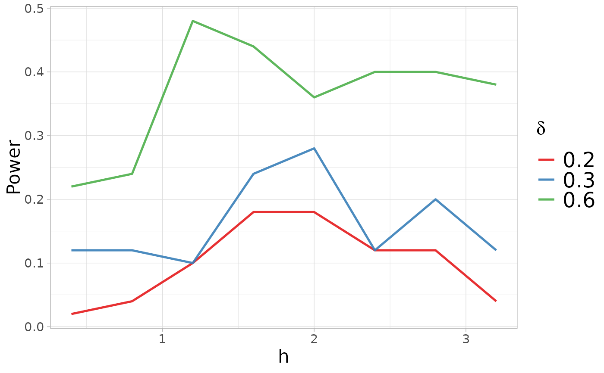

This function computes the kernel bandwidth of the Gaussian kernel for the normality, two-sample and k-sample kernel-based quadratic distance (KBQD) tests.
Usage
select_h(
x,
y = NULL,
alternative = NULL,
method = "subsampling",
b = 0.8,
B = 100,
delta_dim = 1,
delta = NULL,
h_values = NULL,
Nrep = 50,
n_cores = 2,
Quantile = 0.95,
power.plot = TRUE
)Arguments
- x
Data set of observations from X.
- y
Numeric matrix or vector of data values. Depending on the input
y, the selection of h is performed for the corresponding test.if
y= NULL, the function performs the tests for normality onx.if
yis a data matrix, with same dimensions ofx, the function performs the two-sample test betweenxandy.if
yis a numeric or factor vector, indicating the group memberships for each observation, the function performs the k-sample test.
- alternative
Family of alternative chosen for selecting h, between "location", "scale" and "skewness".
- method
The method used for critical value estimation ("subsampling", "bootstrap", or "permutation").
- b
The size of the subsamples used in the subsampling algorithm .
- B
The number of iterations to use for critical value estimation, B = 150 as default.
- delta_dim
Vector of coefficient of alternative with respect to each dimension
- delta
Vector of parameter values indicating chosen alternatives
- h_values
Values of the tuning parameter used for the selection
- Nrep
Number of bootstrap/permutation/subsampling replications.
- n_cores
Number of cores used to parallel the h selection algorithm. If this is not provided, the function will detect the available cores.
- Quantile
The quantile to use for critical value estimation, 0.95 is the default value.
- power.plot
Logical. If TRUE, it is displayed the plot of power for values in h_values and delta.
Value
A list with the following attributes:
h_selthe selected value of tuning parameter h;powermatrix of power values computed for the considered values ofdeltaandh_values;power.plotpower plots (ifpower.plotisTRUE).
Details
The function performs the selection of the optimal value for the tuning
parameter \(h\) of the normal kernel function, for normality test, the
two-sample and k-sample KBQD tests. It performs a small simulation study,
generating samples according to the family of alternative specified,
for the chosen values of h_values and delta.
We consider target alternatives \(F_\delta(\hat{\mathbf{\mu}}, \hat{\mathbf{\Sigma}}, \hat{\mathbf{\lambda}})\), where \(\hat{\mathbf{\mu}}, \hat{\mathbf{\Sigma}}\) and \(\hat{\mathbf{\lambda}}\) indicate the location, covariance and skewness parameter estimates from the pooled sample.
Compute the estimates of the mean \(\hat{\mu}\), covariance matrix \(\hat{\Sigma}\) and skewness \(\hat{\lambda}\) from the pooled sample.
Choose the family of alternatives \(F_\delta = F_\delta(\hat{\mu} ,\hat{\Sigma}, \hat{\lambda})\).
For each value of \(\delta\) and \(h\):Generate \(\mathbf{X}_1,\ldots,\mathbf{X}_{k-1} \sim F_0\), for \(\delta=0\);
Generate \(\mathbf{X}_k \sim F_\delta\);
Compute the \(k\)-sample test statistic between \(\mathbf{X}_1, \mathbf{X}_2, \ldots, \mathbf{X}_k\) with kernel parameter \(h\);
Compute the power of the test. If it is greater than 0.5, select \(h\) as optimal value.
If an optimal value has not been selected, choose the \(h\) which corresponds to maximum power.
The available alternative are
location alternatives, \(F_\delta =
SN_d(\hat{\mu} + \delta,\hat{\Sigma}, \hat{\lambda})\),with
\(\delta = 0.2, 0.3, 0.4\);
scale alternatives,
\(F_\delta = SN_d(\hat{\mu} ,\hat{\Sigma}*\delta, \hat{\lambda})\),
\(\delta = 0.1, 0.3, 0.5\);
skewness alternatives,
\(F_\delta = SN_d(\hat{\mu} ,\hat{\Sigma}, \hat{\lambda} + \delta)\),
with \(\delta = 0.2, 0.3, 0.6\).
The values of \(h = 0.6, 1, 1.4, 1.8, 2.2\) and \(N=50\) are set as
default values.
The function select_h() allows the user to
set the values of \(\delta\) and \(h\) for a more extensive grid search.
We suggest to set a more extensive grid search when computational resources
permit.
Note
Please be aware that the select_h() function may take a significant
amount of time to run, especially with larger datasets or when using an
larger number of parameters in h_values and delta. Consider
this when applying the function to large or complex data.
References
Markatou, M. and Saraceno, G. (2024). “A Unified Framework for
Multivariate Two- and k-Sample Kernel-based Quadratic Distance
Goodness-of-Fit Tests.”
https://doi.org/10.48550/arXiv.2407.16374
Saraceno, G., Markatou, M., Mukhopadhyay, R. and Golzy, M. (2024).
Goodness-of-Fit and Clustering of Spherical Data: the QuadratiK package
in R and Python.
https://arxiv.org/abs/2402.02290.
See also
The function select_h is used in the kb.test() function.
Examples
# Select the value of h using the mid-power algorithm
# \donttest{
x <- matrix(rnorm(100),ncol=2)
y <- matrix(rnorm(100),ncol=2)
h_sel <- select_h(x,y,"skewness")

h_sel
#> $h_sel
#> [1] 1.6
#>
#> $power
#> h delta power
#> 20 1.6 0.6 0.44
#> 24 3.2 0.6 0.34
#> 19 1.2 0.6 0.32
#> 22 2.4 0.6 0.32
#> 21 2.0 0.6 0.28
#> 23 2.8 0.6 0.26
#> 18 0.8 0.6 0.24
#> 16 3.2 0.3 0.24
#> 12 1.6 0.3 0.22
#> 15 2.8 0.3 0.20
#> 13 2.0 0.3 0.14
#> 14 2.4 0.3 0.14
#> 17 0.4 0.6 0.12
#> 10 0.8 0.3 0.12
#> 11 1.2 0.3 0.10
#> 8 3.2 0.2 0.10
#> 3 1.2 0.2 0.08
#> 4 1.6 0.2 0.08
#> 6 2.4 0.2 0.08
#> 7 2.8 0.2 0.08
#> 9 0.4 0.3 0.06
#> 2 0.8 0.2 0.06
#> 5 2.0 0.2 0.04
#> 1 0.4 0.2 0.02
#>
#> $power.plot
 #>
# }
#>
# }